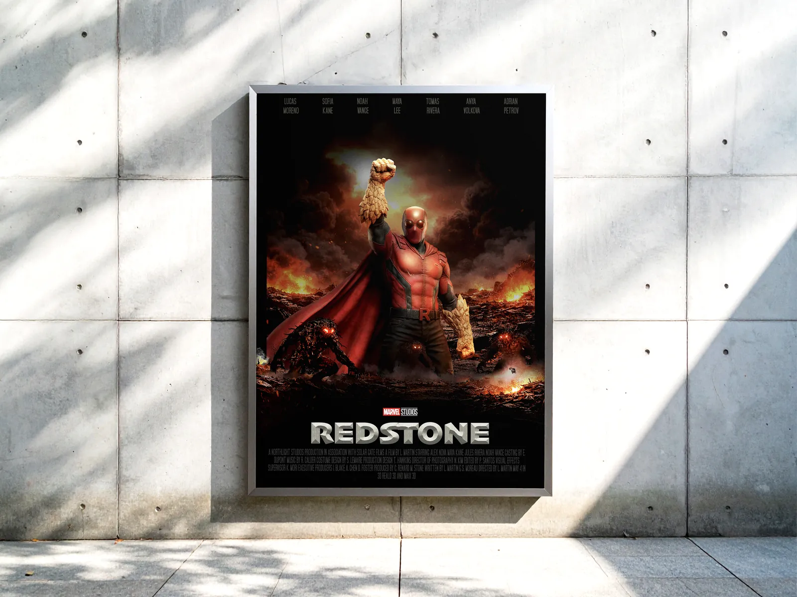
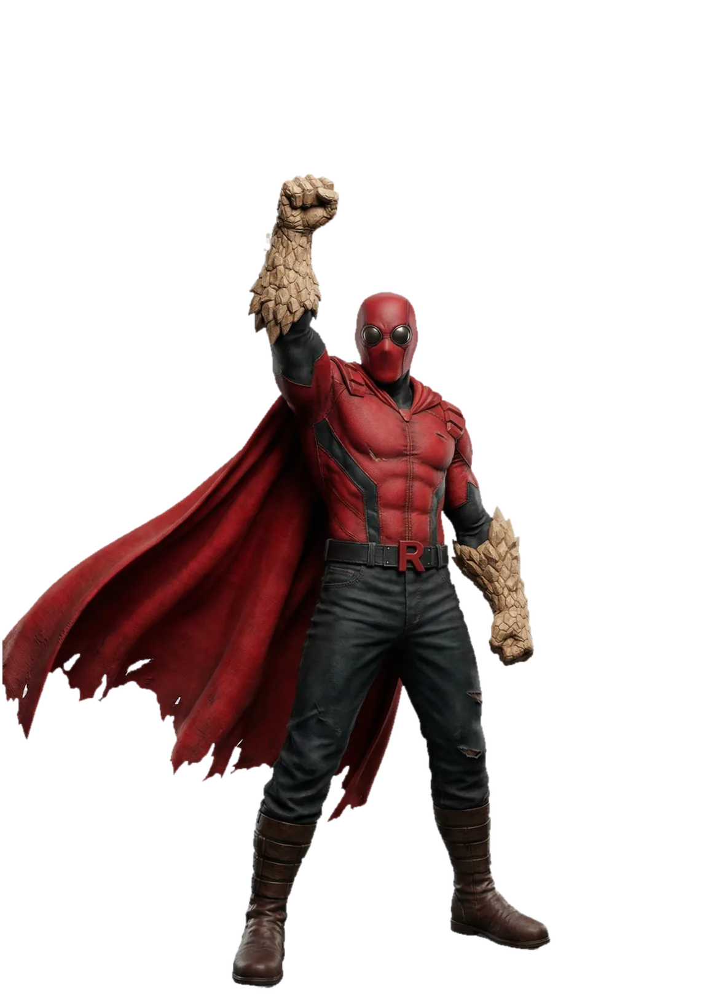
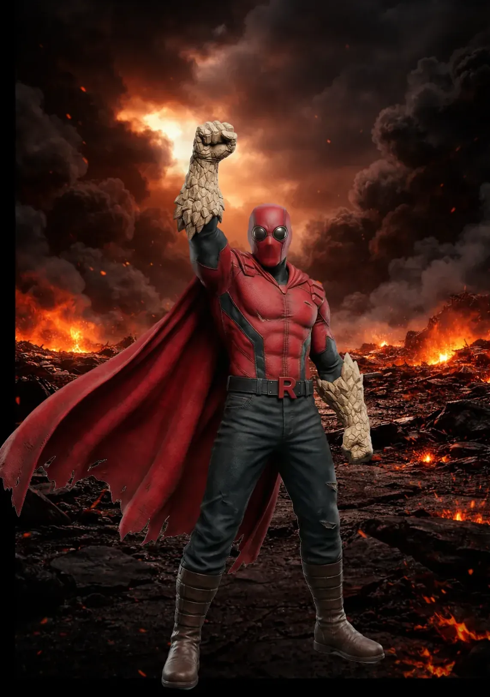
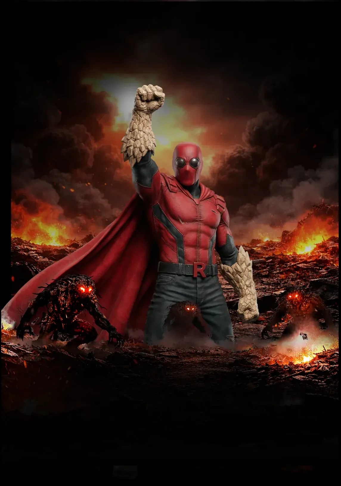
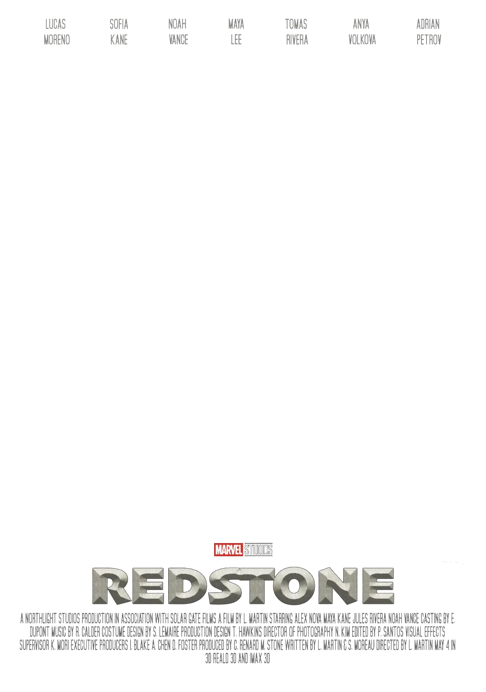
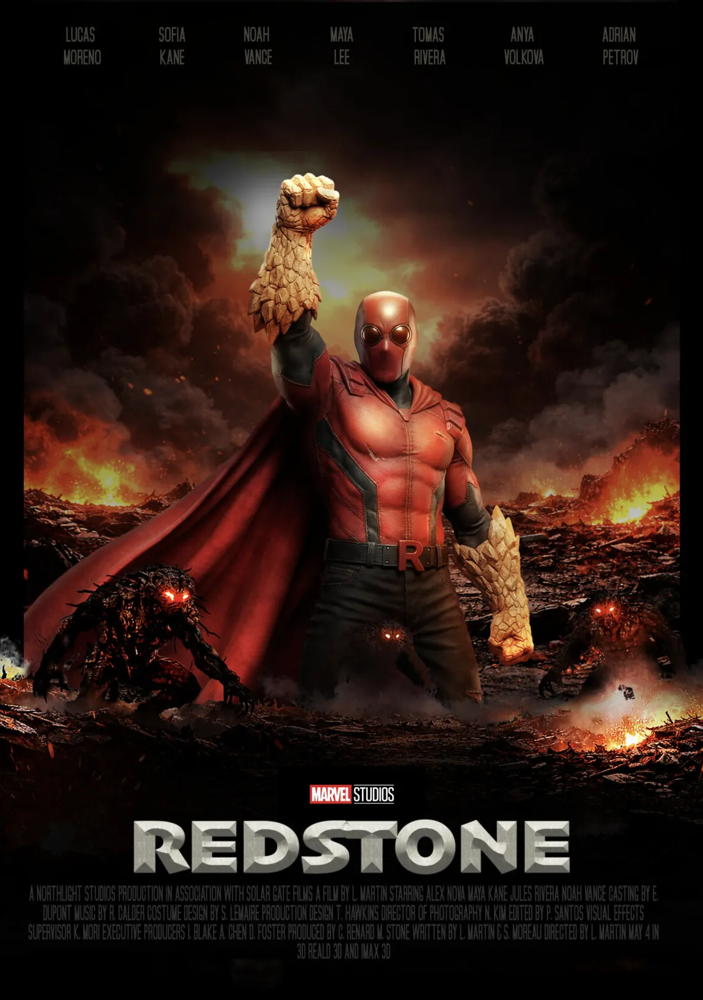

Redstone
Un cours d'Ynov, Photoshop, et trois images à fondre en une. Projet réalisé par Clément Gosselin, Product Builder no-code et IA à Ynov Bordeaux.
Voir le site
Le projet
Un héros qui n'existe pas. Le brief du cours de direction artistique : l'affiche d'un film de super-héros original, avec son personnage, son univers et son identité graphique. Redstone change ses poings en roche, et ce pouvoir fixe toute la direction : costume rouge vif, ville en feu, palette restreinte au rouge, au noir, à l'anthracite et au blanc.
Trois images, une affiche. J'ai généré séparément par IA le personnage, l'arrière-plan et le premier plan, en itérant sur les prompts pour accorder la lumière, la pose et l'ambiance. Le reste est un compositing fait à la main sous Photoshop : détourage, raccords d'ombres et de lumière, fumée, braises, puis le titrage et le bloc de crédits d'une affiche de cinéma.





Une affiche de Clément Gosselin Personnage, composition et retouche Photoshop Images de départ générées par IA Cours de direction artistique, Ynov Bordeaux, 2025
L'IA m'a donné trois images. L'affiche, c'est le travail qu'il a fallu pour qu'elles n'en fassent qu'une.